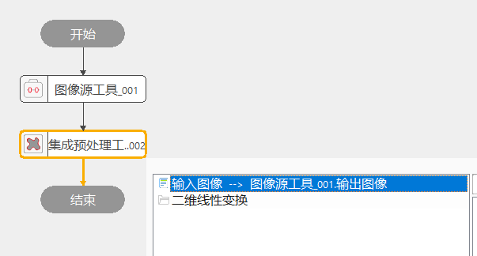
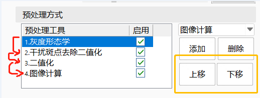
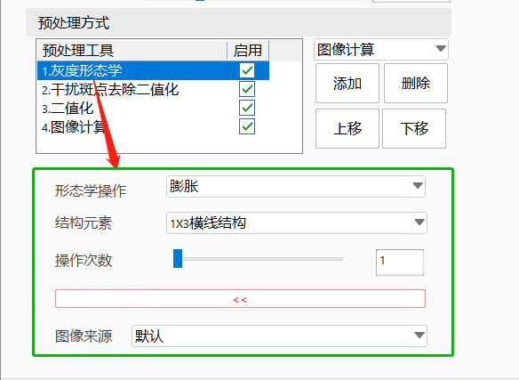
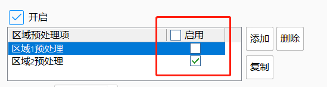
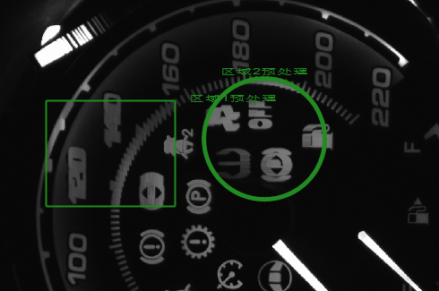

Công cụ tiền xử lý tích hợp
1. Tóm tắt chức năng
Công cụ tiền xử lý tích hợp là một công cụ dạng tổng hợp, tích hợp nhiều phương pháp tiền xử lý phổ biến trong dự án hiện tại, bao gồm: trích xuất màu từ ảnh màu, tách ảnh RGB, hình thái học mức xám, thay thế giá trị mức xám trong vùng, tăng độ tương phản, nhị phân hóa, thay thế giá trị mức xám trong phạm vi, phép toán ảnh–ảnh, phép toán ảnh, loại bỏ nhiễu đốm bằng nhị phân hóa, v.v.
2. Kịch bản ứng dụng
Công cụ tiền xử lý tích hợp cho phép người dùng sử dụng một công cụ duy nhất để hoàn thành hầu hết các chức năng tiền xử lý, thay vì phải thêm nhiều công cụ tiền xử lý rời rạc trong lưu đồ. Công cụ được thiết kế theo cách xử lý thời gian thực, giúp người dùng xem ngay ảnh kết quả sau khi thêm chức năng tiền xử lý, nâng cao trải nghiệm và hiệu quả thao tác.
Ứng dụng điển hình là xây dựng linh hoạt một quy trình chuẩn cho dự án: sau bước thu nhận ảnh, người dùng thêm một công cụ tiền xử lý tích hợp trống. Người dùng cuối có thể tùy theo nhu cầu tiền xử lý thực tế của dự án để quyết định có kích hoạt tiền xử lý hay không, và thêm các chức năng cần thiết.
3. Giải thích nguyên lý
Bản chất của công cụ tiền xử lý tích hợp là tích hợp nhiều công cụ tiền xử lý trong VA. Ví dụ: chức năng trích xuất màu sẽ gọi nội bộ công cụ trích xuất màu; chức năng nhị phân hóa sẽ gọi công cụ nhị phân hóa. Vì vậy trong tài liệu này không mô tả nguyên lý chi tiết của từng chức năng; người dùng có thể tham khảo tài liệu riêng của từng công cụ tương ứng.
4. Hướng dẫn sử dụng

Chức năng tiền xử lý tích hợp
Thêm mục tiền xử lý vùng: Mỗi mục cuối cùng sẽ có ảnh kết quả tiền xử lý của vùng xuất ra. Nội dung của mục bao gồm:
1. ROI: Vùng ảnh mà kết quả tiền xử lý của mục này có hiệu lực. Hỗ trợ hình chữ nhật, hình chữ nhật biến đổi affine, hình tròn và đa giác.
2. Trích xuất màu: Thực hiện trích xuất màu cho ROI hiện tại. Chức năng tương tự công cụ trích xuất màu.
3. Bộ công cụ tiền xử lý: Sử dụng kết quả trích xuất màu (nếu bật) làm ảnh đầu vào, thực hiện tuần tự theo danh sách các công cụ tiền xử lý. Các công cụ bao gồm: tách ảnh RGB màu, hình thái học mức xám, thay thế giá trị mức xám trong vùng, tăng độ tương phản, nhị phân hóa, thay thế giá trị mức xám trong phạm vi, phép toán ảnh–ảnh, phép toán ảnh, loại bỏ nhiễu đốm bằng nhị phân hóa.

“Logic thực thi tiền xử lý”: Kết quả của công cụ tiền xử lý được bật trước đó sẽ làm đầu vào cho công cụ tiền xử lý tiếp theo. Kết quả của công cụ tiền xử lý cuối cùng sẽ là kết quả tổng của vùng tiền xử lý hiện tại. Người dùng có thể thay đổi thứ tự công cụ tiền xử lý để thay đổi trình tự thực thi.

“Cấu hình tham số công cụ tiền xử lý”
Khi chọn công cụ trong danh sách tiền xử lý, các tham số có thể điều chỉnh sẽ hiển thị phía dưới, như hình sau:

“Nguồn ảnh”: Mặc định là kết quả của công cụ được bật trước, nhưng có thể cấu hình ảnh đầu vào của công cụ hiện tại, lựa chọn là kết quả của các công cụ tiền xử lý trước đó. Nếu công cụ hiện tại là công cụ đầu tiên, ảnh đầu vào sẽ là kết quả trích xuất màu.

Bật và tắt
Cho phép điều khiển thực thi hoặc không thực thi mục tiền xử lý vùng.

Cho phép điều khiển thực thi hoặc không thực thi các công cụ tiền xử lý trong bộ công cụ.

Hiển thị kết quả thực thi thời gian thực
Ảnh kết quả tiền xử lý toàn cục được cập nhật theo thời gian thực.

5. Các vấn đề thường gặp
| Mô tả hiện tượng |
Cách khắc phục |
| Tiền xử lý thất bại |
Mục tiền xử lý vùng trống, tất cả các mục tiền xử lý vùng đều chưa được bật, không có công cụ nào được thêm trong mục tiền xử lý, hoặc với ảnh màu, không bật trích xuất màu hoặc chưa thêm công cụ chuyển màu sang đen trắng. |
6. Giải thích tham số
Tham số thuộc tính công cụ
| Tên tham số |
Mô tả tham số |
| Nhập ảnh màu hay không |
Có: ảnh đầu vào là ảnh màu; Không: ảnh đầu vào là ảnh mức xám |
Tham số đầu vào công cụ
| Tên tham số |
Mô tả tham số |
| Ảnh đầu vào |
Có thể liên kết với ảnh đầu vào mức xám |
| Ảnh đầu vào RGB |
Có thể liên kết với ảnh đầu vào màu |
| Biến đổi tuyến tính 2D |
Liên kết biến đổi tuyến tính 2 chiều |
Tham số đầu ra công cụ
| Tên tham số |
Mô tả tham số |
| Ảnh đầu vào |
Hiển thị ảnh mức xám liên kết qua chuỗi tham số trong mục Edit của khu vực xem |
| Ảnh đầu vào RGB |
Hiển thị ảnh RGB liên kết qua chuỗi tham số trong mục Edit của khu vực xem |
| Ảnh đầu ra |
Hiển thị ảnh tiền xử lý cuối cùng trong mục Result của khu vực xem |
| Kết quả thực thi công cụ |
Hiển thị trạng thái thực thi tổng thể của công cụ |
| Thời gian thực thi công cụ |
Hiển thị thời gian thực thi của công cụ |
7. 示例工程
参见“\Samples\集成预处理工具.gvp”。